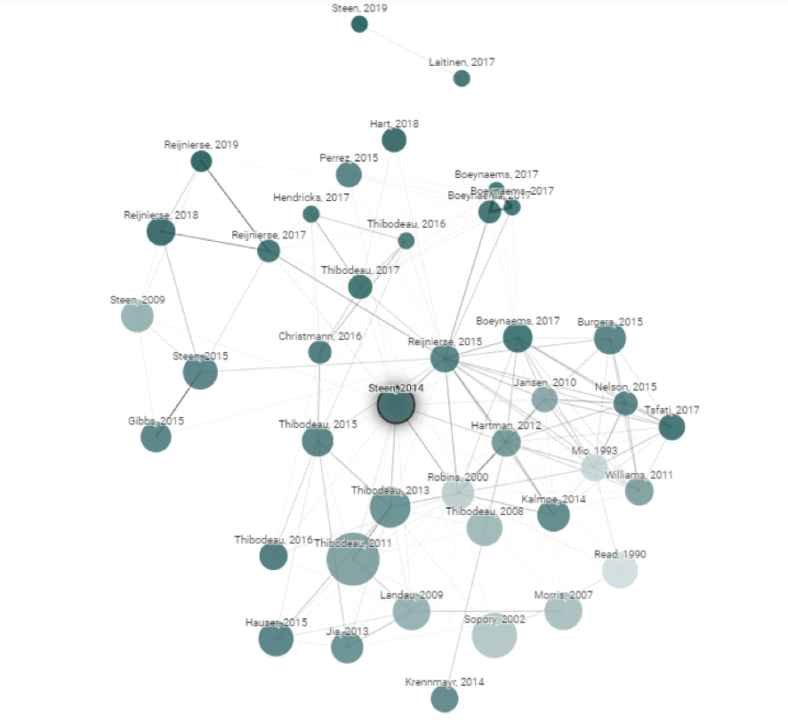
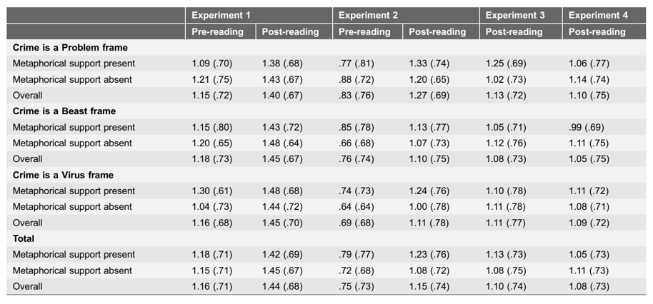

收录于合集 #政治传播 12个
文献来源： Gerard J. Steen, W. Gudrun Reijnierse and Christian Burgers, “When Do Natural Language Metaphors Influence Reasoning? A Follow-up Study to Thibodeau and Boroditsky (2013),” PLoS One , Vol. 9, No. 12, 2014, p. e113536.
作者简介： Gerard J. Steen，荷兰阿姆斯特丹大学语言传播、辩论和修辞教授；W.G. Reijnierse (Gudrun)，荷兰拉德堡德大学语言研究中心助理教授；Christian Burgers，荷兰阿姆斯特丹自由大学社会科学与传播科学学院副教授。
研究基础
我们的生活中充满了各式各样的政治隐喻，譬如将祖国比作母亲、将抗疫视为战争。通过将抽象的概念与熟悉的事物联系起来，政治隐喻可以更为高效、简洁地传递信息，同时可以更好地触发情感共鸣。因此，不少学者认为，政治隐喻可以干预受众的思维与认知，产生强大的政治传播效应。但也有学者对此持保留态度，他们认为隐喻对受众的影响依赖于严格的前提条件，并且只发生在一定的场域之内。

本文与相关文献
在西方语境下，犯罪往往被隐喻为“病毒”（virus）或“野兽”（beast）。这两个名词似乎包含着不太一样的情感内核，那么这两种不同的隐喻会不会导致受众不同的政治偏好？有学者认为，病毒隐喻会引导受众思考犯罪的起源与扩散机制，进而更倾向于温和的社会改革与教育政策；而野兽隐喻会引导受众关注犯罪问题的严重形势和遏制犯罪的必要性，进而更倾向于直接的强力执法政策。这一观点得到了实验研究的支持，当被试阅读了将犯罪比作野兽（而非病毒）的材料后，其政策偏好确实变得更为强硬。
但这些证据存在着一些问题。譬如实验设计中缺乏中立的对照组和前测设计，而且阅读材料中使用了很多支持隐喻的描述。这就使得被试的态度差异很难被完全归因于隐喻。为了解决上述问题并进一步探究政治隐喻的实际作用，本文作者设计了更为完备的实验，并且得出了令人意外的结果。
研究设计
本文作者一共设计了四项实验。前两组实验根据病毒隐喻、野兽隐喻、无隐喻和有无隐喻支持将被试分为六组，同时对被试的政策偏好进行了前测与后测。这是一种兼具被试间设计与被试内设计的标准实验方法。值得注意的是实验1是在荷兰用荷兰语进行的，而实验2是在美国用英语进行的，这是为观测语言和文化的影响。为了防止“预处理”对实验中处理效应的干预，后两组删去了前测，成为了单纯的被试间设计。根据功效分析，作者在实验4中将样本扩大为967。这意味着如果处理效应真实存在，那么作者将有极大的改率检测出这一效应。
四项实验均通过线上系统采集数据。在引导页面结束后，被试会首先被要求填答有关政策偏好的题项（后两组实验跳过了这一环节），然后继续填答自己的意识形态、年龄、性别、国籍、语言、教育程度和地理位置的信息。随后系统进行自动分组，不同组别的被试获取到不同的材料并进行阅读。此后被试重新回答有关政策偏好的题项。实验最后要求被试回忆影响其判断的材料部分。
在假设检验之前，作者首先尝试排除个体特质的影响。结果表明意识形态、国籍、语言、教育程度在四项实验中都分布均匀，而性别和年龄对个体政策偏好的影响并不显著。
研究结果 ****
作者首先检验了政治隐喻的处理效应。作者对不同政策的强硬程度进行打分，从而计算出被试政策偏好的标准化指标。统计结果显示，在前三项实验中，六祖被试的政策偏好相差无几。即使在样本巨大的第四项实验中，也没有出现具有统计显著性的组间差异。与此同时，作者发现真正的显著性差异存在于前测与后测之间。出于稳健性考虑，作者将政策偏好指标更换为偏好强硬政策的人数，统计结果并没有改变。从这一结果来看，政治隐喻的实际作用很可能被学者夸大了。
 政治隐喻的处理效应
作者接下来探究政治隐喻的具体机制。四项实验的最后一个问题要求被试回忆影响其判断的材料部分，这使得作者可以判断被试究竟有没有记住政治隐喻的概念（“病毒”或“野兽”）或政治隐喻中的意义（如“疾病”、“猛兽”等近义词）。统计结果表明，前测、隐喻、隐喻支持对隐喻概念记忆的影响均不显著。隐喻与隐喻支持的交互显著影响隐喻概念，有隐喻支持时，病毒隐喻被更好的记忆；但野兽隐喻没有这种情况。3（野兽框架/病毒框架/控制组） *2（正确/错误记忆隐喻词） *2（前测/后测）多组比较结果，真正显著的只有前测/后测之间的主效应。
结论与探讨
与前人的研究针锋相对，本文作者从始至终都没有观测到病毒/野兽隐喻的处理效应，这对政治隐喻的真实作用提出了强烈的质疑。一方面，实验中唯一显著的影响是前测/后测之间的主效应，它与隐喻无关也与有无隐喻支持无关。这只能表明，被试在阅读有关犯罪的材料后，其平均政策偏好更倾向于强制。这很可能是因为阅读材料强调了犯罪的突然增长。如果材料指出犯罪是一个根深蒂固的长期问题，也许被试会更倾向于温和的社会改革与教育政策。另一方面，隐喻与支持隐喻的描述确实存在交互效应，但并不会显著影响被试的政策偏好。这提醒研究者要更加关注政治隐喻中的调节效应和中介效应。
注： 编译对原文进行了较大删改，请读者朋友自行对照。特别鸣谢中国人民大学国际关系学院“政治心理与政治传播”读书会。
推荐阅读：
1.George Lakoff, “The Contemporary Theory of Metaphor,” in Metaphor and Thought (2nd Edition), Andrew Ortony, ed., Cambridge: Cambridge University Press 1993.
2.Jeffery Scott Mio, “Metaphor and Politics,” Metaphor and Symbol , Vol. 12, No. 2, 1997, pp. 113-133.
3.Nicholas Howe, “Metaphor in Contemporary American Political Discourse,” Metaphor and Symbol , Vol. 3, No. 2, 1988, pp. 87-104.
4.Patrick Wallis and Brigitte Nerlich, “Disease Metaphors in New Epidemics: The Uk Media Framing of the 2003 Sars Epidemic,” Social Science & Medicine, Vol. 60, No. 11, 2005, pp. 2629-39.
5.Paul H. Thibodeau and Lera Boroditsky, “Metaphors We Think With: The Role of Metaphor in Reasoning,” PloS one , Vol. 6, No. 2, 2011, pp. 1-11.
编译：陆屹洲 审校：杨端程 编辑：郭静远
【政文观止Poliview】系头条号签约作者